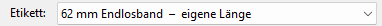
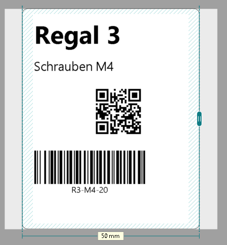
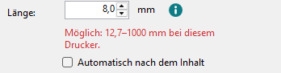

Etikettenformate und eigene Längen
Auf Endlosband bestimmen Sie die Länge des Etiketts selbst: im Feld Länge oder am Griff am Ende des Etiketts. Ein Etikettenformat brauchen Sie dafür nicht.
-
Etikett wählen
Oben bei Etikett stehen zuerst Ihre Etikettenformate, dann Brothers Papiere für das Modell des Druckers. Für eine eigene Länge wählen Sie ein Endlosband, zum Beispiel „62 mm Endlosband“ (z. B. DK-22205, in den USA DK-2205).

Sobald Sie eine Länge einstellen, steht dort „eigene Länge“.
-
Länge eintippen
Klicken Sie auf eine freie Stelle neben dem Etikett, damit nichts ausgewählt ist. Rechts unter Etikett steht dann das Feld Länge. Tippen Sie die Länge in Millimetern ein.
Gedruckt wird genau diese Länge. Das (i) neben dem Feld nennt, was der Drucker kann: beim QL-800 und den anderen Modellen mit schmalem Druckkopf 12,7 bis 1000 mm, bei den breiten Modellen (QL-1050 bis QL-1115NWB) 25,4 bis 3000 mm.
-
Am Ende ziehen
Am Ende des Etiketts sitzt ein Griff. Ziehen Sie ihn, um das Etikett länger oder kürzer zu machen; das Maß unter dem Etikett zeigt die Länge.

-
Automatisch nach dem Inhalt
Mit dem Häkchen Automatisch nach dem Inhalt folgt das Ende dem letzten Objekt, mit demselben Rand wie am Anfang. Das Feld wird grau, und am Maß steht „automatisch“. Schieben Sie ein Objekt weiter nach hinten, wächst das Etikett mit.
Für eine feste Länge nehmen Sie das Häkchen wieder heraus.
-
Zu kurz oder zu lang
Eine Länge, die der Drucker nicht drucken kann, nimmt der QL Label Maker nicht an. Unter dem Feld steht in Rot, was bei diesem Drucker möglich ist.

-
Als Etikettenformat speichern
Nur nötig, wenn Sie die Länge auch in anderen Programmen wählen möchten, zum Beispiel in Word. Der Link Als Etikettenformat speichern … öffnet QL Label Formats mit einem neuen Format dieser Länge. Dort wie immer auf Übernehmen klicken (eine Abfrage nach Administratorrechten).
Ihre Etikettenformate verwalten Sie in QL Label Formats, auch über Extras > QL Label Formats.